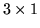
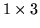

<!DOCTYPE HTML PUBLIC "-//W3C//DTD HTML 3.2 Final//EN">
<!-- Converted with jLaTeX2HTML 98.1p1 release (March 2nd, 1998) + JP patch 2.0 (March 16th, 1998)
patched by Kenshi Muto (mutou@three-a.co.jp), Three-A Systems,Co.,Ltd.
LaTeX2HTML 98.1p1 release (March 2nd, 1998)
originally by Nikos Drakos (nikos@cbl.leeds.ac.uk), CBLU, University of Leeds
* revised and updated by:  Marcus Hennecke, Ross Moore, Herb Swan
* with significant contributions from:
  Jens Lippmann, Marek Rouchal, Martin Wilck and others  -->
<HTML>
<HEAD>
<TITLE>vectorprod</TITLE>
<META NAME="description" CONTENT="vectorprod">
<META NAME="keywords" CONTENT="REFS">
<META NAME="resource-type" CONTENT="document">
<META NAME="distribution" CONTENT="global">
<META HTTP-EQUIV="Content-Type" CONTENT="text/html; charset=iso-2022-jp">
<LINK REL="STYLESHEET" HREF="REFS.css">
<LINK REL="next" HREF="node240.htm">
<LINK REL="previous" HREF="node238.htm">
<LINK REL="up" HREF="node4.htm">
<LINK REL="next" HREF="node240.htm">
</HEAD>
<BODY BGCOLOR=NavajoWhite>
<!-- Navigation Panel -->
<A NAME="tex2html3398"
 HREF="node240.htm">
</A> 
<A NAME="tex2html3395"
 HREF="node4.htm">
</A> 
<A NAME="tex2html3389"
 HREF="node238.htm">
</A> 
<A NAME="tex2html3397"
 HREF="node1.htm">
</A>  
<BR>
<STRONG> Next:</STRONG> <A NAME="tex2html3399"
 HREF="node240.htm">version</A>
<STRONG> Up:</STRONG> <A NAME="tex2html3396"
 HREF="node4.htm">$B%j%U%!%l%s%9%^%K%e%"%k(J</A>
<STRONG> Previous:</STRONG> <A NAME="tex2html3390"
 HREF="node238.htm">vec2diag</A>
<BR>
<BR>
<!-- End of Navigation Panel -->

<H2><A NAME="SECTION0004235000000000000000">&#160;</A><A NAME="man_vectorprod">&#160;</A>
<BR>
vectorprod
</H2><FONT SIZE="-1"><FONT SIZE="-1"><FONT SIZE="-1"><FONT SIZE="-1"><FONT SIZE="-1"><FONT SIZE="-1"></FONT></FONT></FONT></FONT></FONT></FONT><DL COMPACT>

<DT>$B!ZL\E*![(J
<DD>vectorprod - $B%Y%/%H%k@Q(J($B30@Q(J)
<DT>$B!Z7A<0![(J
<DD><PRE>
z = vectorprod(x,y)
   Matrix z;
   Matrix x,y;
</PRE><FONT SIZE="-1"><DT>$B!Z>\:Y![(J
<DD>vectorprod(x,y)$B$O!$%Y%/%H%k(J x $B$H(J y $B$N%Y%/%H%k@Q(J($B30@Q(J)$B$r7W;;$9$k!#(J
$B$rJV$9!#(Jx $B$H(J y $B$,9T%Y%/%H%k$N$H$-!$7k2L$O9T%Y%/%H%k$K$J$j!$(Jx $B$H(J
y $B$,(J $BNs%Y%/%H%k$N$H$-!$7k2L$ONs%Y%/%H%k$K$J$k!#(Jx $B$H(J y $B$O!$(J</FONT>
<!-- MATH: $3 \times 1$ -->
<FONT SIZE="-1">$B$^$?$O(J </FONT>
<!-- MATH: $1 \times 3$ -->
<FONT SIZE="-1"> $B$N%Y%/%H%k$G$J$1$l$P$J$i$J$$!#(J
<DT>$B!ZNcBj![(J
<DD></FONT><PRE>
&gt;&gt; x = [1 2 3];
&gt;&gt; y = [4 5 6];
&gt;&gt; z = vectorprod(x,y)
=== [z] : (  1,  3) ===
           (  1)           (  2)           (  3)     
(  1) -3.00000000E+00  6.00000000E+00 -3.00000000E+00
</PRE><FONT SIZE="-1"><FONT SIZE="-1"><DT>$B!Z;2>H![(J
<DD></FONT></FONT>
<DIV><TT>prod(<A HREF="node162.htm#man_prod">2.163</A>)
<BR></TT></DIV><FONT SIZE="-1"><FONT SIZE="-1"><FONT SIZE="-1"></DL><FONT SIZE="-1"><FONT SIZE="-1"><FONT SIZE="-1"></FONT></FONT></FONT></FONT></FONT></FONT>
<BR><HR>
<ADDRESS>
Masanobu KOGA
$BJ?@.(J11$BG/(J10$B7n(J2$BF|(J
</ADDRESS>
</BODY>
</HTML>
